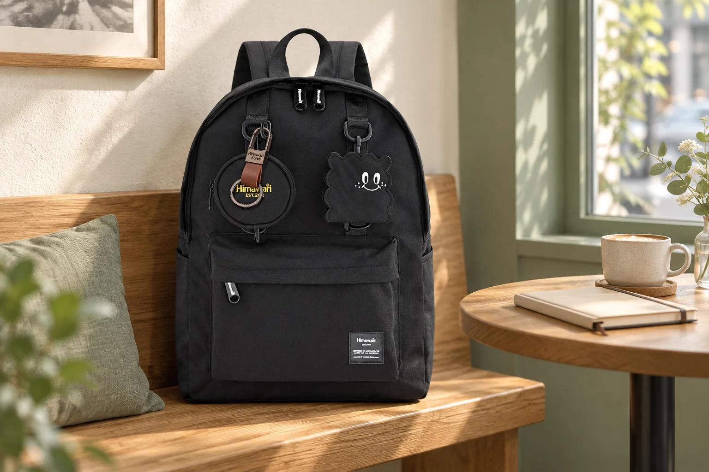

카페에서 백팩을 놓을 때 생기는 동선

카페에서 백팩을 벗는 순간은 짧지만 놓은 위치는 머무는 동안의 동선을 만듭니다. 의자 뒤에 두면 물건을 꺼낼 때 몸을 돌려야 하고, 테이블 가장자리에 놓으면 컵을 옮길 자리가 줄어들 수 있습니다. 지금 가진 가방을 어느 곳에 둘지 판단하려면 의자를 빼는 길과 옆자리 사람의 움직임부터 봅니다. 매장 안내 안에서 가방 전체를 받칠 수 있는 자리를 고르는 준비입니다.
앉기 전에 비워둘 길
의자가 움직이는 방향과 옆자리의 출입 경로를 살펴봅니다. 가방 바닥이나 어깨끈이 통로로 나오지 않는 위치를 정합니다. 넓어 보이는 자리라도 다른 손님이 지나갈 길이 될 수 있으므로 자기 좌석의 범위 안에서 둡니다. 장식이나 긴 끈이 있다면 가방을 놓을 때 어디에 남는지도 봅니다. 앉은 뒤 정리하기 어려운 공간이라면 가방을 벗기 전에 다른 허용된 위치를 고를 수 있습니다.
매장에 보관 바구니가 있다면 사용 가능한지와 안쪽 상태를 확인합니다. 물기나 이물질이 있으면 그 상태로 종이와 기기가 든 가방을 넣지 않습니다. 바구니가 없다는 이유로 다른 사람의 좌석을 가방 자리로 먼저 정하지 않습니다. 직원의 안내가 필요한 공간이라면 문의할 수 있습니다. 가방을 둘 곳과 앉을 곳이 함께 정해져야 필요한 소품을 꺼내는 동작도 이어집니다.
가방 전체가 받쳐지는 안정된 면을 봅니다. 허용된 보관 공간이나 자기 자리의 안쪽처럼 실물과 주변 움직임을 함께 살펴 선택합니다. 바닥에 두어야 한다면 물기와 이물질을 확인하고 넘어지지 않는 방향으로 놓습니다. 의자 등받이에 무거운 가방을 걸어 공간을 만드는 배치보다 실제로 받칠 위치를 먼저 봅니다. 가방이 어느 면과 닿는지 알아두면 나중에 들어 올릴 때도 같은 면을 확인할 수 있습니다.
음료와 가방을 여는 방향
곧 쓸 노트나 안경은 음료를 놓기 전에 꺼낼 수 있습니다. 열린 가방 위로 컵을 넘기는 동작이 생기지 않도록 테이블의 사용 위치를 나눕니다. 가방을 테이블에 올려도 되는지는 매장 안내를 따릅니다. 가방 바닥이 식기나 음식과 닿지 않게 준비하고 필요한 물건을 꺼낸 뒤 여밈을 닫습니다. 작업할 공간을 마련한 뒤 음료 자리를 정하면 소지품을 다시 옮길 필요가 줄어듭니다.
노트북이나 책을 계속 꺼낼 계획이라면 그 물건을 받칠 면도 생각합니다. 가방을 한 손으로 당겨 올리며 음료를 옮기지 않고 내려놓을 자리를 확보합니다. 작은 소품은 사용한 뒤 돌아갈 위치가 남도록 필통이나 파우치를 곁에 둘 수 있습니다. 컵과 종이, 가방이 같은 좁은 면을 반복해서 지나가면 자리 배치를 다시 조정할 수 있습니다. 실제로 무엇을 먼저 쓸지가 선택의 기준입니다.
Himawari No.0422와 카페 외출을 준비할 때에는 앉은 뒤 필요한 묶음을 골라둡니다. 노트와 필기구를 꺼내고 남은 소지품은 가방의 자기 위치에 유지합니다. 가방은 통로를 비우면서 전체가 받쳐지는 허용된 자리에 놓습니다. 나중에 이동할 때 작은 소품과 케이블이 같은 묶음으로 돌아갈 수 있도록 작업 자리도 함께 정리하는 흐름입니다.

충전 선은 자기 자리 안에서
콘센트를 쓰려면 매장의 허용 여부와 위치를 봅니다. 자기 기기와 콘센트 사이의 선이 통로를 건너거나 옆자리로 넘어가지 않는지 확인합니다. 남는 선을 가방 끈과 섞지 않고 사용하는 기기의 안내에 맞춰 정리합니다. 콘센트 위치 때문에 자리 배치가 불편해졌다면 다른 허용된 위치를 고르거나 사용 구성을 바꿀 수 있습니다. 가방 위치를 정한 뒤 선을 억지로 길게 연결하는 순서로만 생각하지 않습니다.
작업 중 케이블이나 작은 부품을 분리하면 돌아갈 자리를 유지합니다. 어댑터를 임시로 의자 아래에 놓거나 가방 지퍼 사이에 끼워두지 않습니다. 사용한 연결 구성을 정한 파우치와 맞춰두면 떠날 때 무엇을 회수할지 읽을 수 있습니다. 공용 물건이 함께 있는 자리에서는 자기 소품과 구별합니다. 잠깐 빌린 부품이 있다면 정한 반환 위치도 기록하거나 바로 돌려놓습니다.
자리를 비울 때에는 휴대전화와 지갑 등 직접 관리할 물건을 챙깁니다. 가방이 보이는 위치에 있다는 사실만으로 소지품의 안전을 확정하지 않습니다. 시설의 보관 안내와 자신의 관리 방식을 따릅니다. 돌아와 작업을 이어갈 때에는 놓인 물건과 연결 상태를 다시 봅니다. 어떤 소품을 이미 가방에 넣었고 어떤 것을 테이블에 남겼는지 한 번 읽으면 마지막 정리에서도 같은 기준을 사용할 수 있습니다.
일어날 때 테이블에서 바닥까지
먼저 테이블의 물건을 정리하고 케이블과 플러그를 안내에 맞춰 분리합니다. 각 소품을 정한 묶음으로 담은 뒤 가방을 놓았던 자리를 봅니다. 의자 아래에 작은 부품이나 종이가 남았는지도 확인합니다. 케이블 한쪽만 챙긴 상태를 전체 회수로 생각하지 않고 연결 구성 전체를 대조합니다. 필요한 물건이 돌아온 뒤 여밈을 닫으면 출발 직전에 가방을 다시 열어 찾을 부담이 줄어듭니다.
가방을 들 때에는 끈이나 장식이 의자 부품에 걸렸는지 보고 자연스럽게 옮깁니다. 사용한 의자는 원래 위치로 정리하고 자기 자리 주변을 마지막으로 살펴봅니다. 가방 바닥이 닿았던 면에 변화가 있었으면 제품 관리 안내에서 정리할 내용을 확인할 수 있습니다. 카페에서 잠시 내려놓는 준비는 놓을 자리와 다시 들 동작이 함께 이어질 때 마무리됩니다. 다음에 같은 공간을 쓰더라도 그날의 통로와 자리 상태는 다시 봅니다.